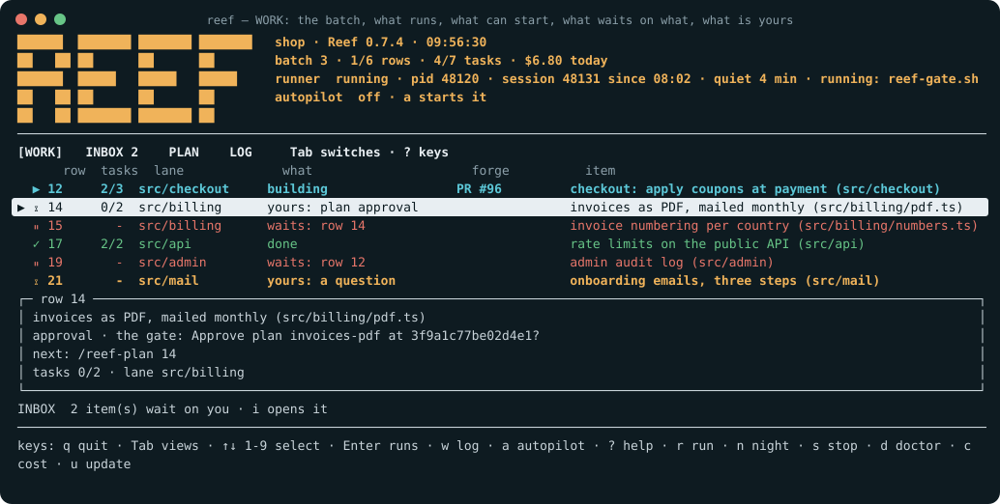
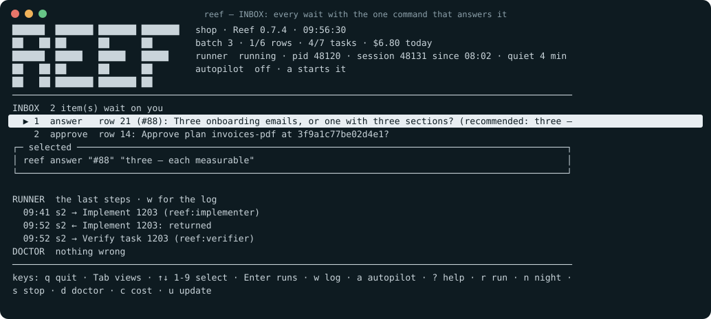
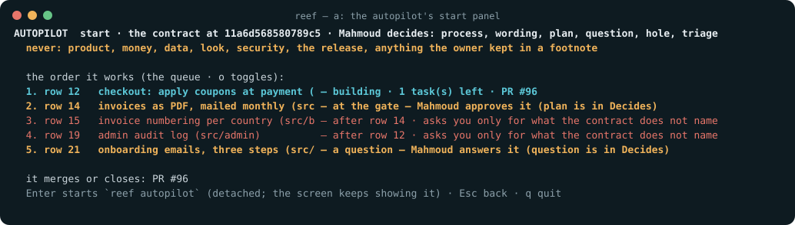

You write the work. Reef does it. You decide twice.
A Claude Code plugin that runs your project's backlog. You write a row in a queue; Reef plans it with you, builds it in one worktree per row on the path its risk names, proves it with one full test run per row and one fresh reviewer, opens the pull request, merges it on a green gate and closes the row. You approve the plan and you merge the release. When you would rather not sit beside it, reef autopilot runs for hours and Mahmoud — your proxy, the project's CTO — takes the decisions inside a contract you approved once.
- 1 You decide twice: the plan and the release
- 2 Hands off: the autopilot, a screen that shows what runs and what waits
- 3 It never overwrites a file you wrote, and it resumes from disk
In Claude Code. Another host: Hosts.
/plugin marketplace add MahmoudMoe/reef
/plugin install reef@mahmoudmoePick your situation. One command each.
The same rows as the README's install table, one at a time. Every command below is a slash command inside your project, in Claude Code; Hosts says what another host changes.
Hands off
reef
reef autopilotTwo commands from a terminal in your project (scripts/reef, placed by /reef-init): the screen, and the standing delegation.
reef is the screen. WORK shows the batch: every row with its state (✓ done · ▶ building · ○ can start now · ⏸ waits on another row · ⧖ yours), its tasks, its lane (rows of one module go one at a time, different modules run beside each other), its issue and PR; the header says whether the runner is alive, how long it has been silent and what it is running right now. The INBOX is every wait with the one command that answers it — a digit selects, Enter runs it on the screen, an answer is typed there with the recommendation prefilled. PLAN is the progress; LOG is the runner's live log with the files each row is changing; a opens the autopilot's start panel; ? lists the keys; q asks before it leaves.
reef autopilot is the day handed to Reef. The loop runs in fresh headless sessions until the batch is done. The decisions you would have been asked go to Mahmoud, your proxy and the project's CTO — a master architect with business sense who chooses the simplest robust thing, challenges a plan once on the record, and researches the web when it changes the decision — inside reef/proxy.md, the contract you approved once (Approve proxy by day at <digest16>?): plan approvals, filed questions, holes after the hunter's rounds, found-row triage, when its Decides: line names them. Every decision is recorded in his name with its undo; a hard limit or a kind the contract does not name is yours, filed as a question, and the runner sleeps — no session, no model — until your answer lands, then carries on. The release still waits for you.
A new project
/reef-initOne batched question set. Your branches, and the architecture grill: host, shape, scale, store, auth boundary, one-year non-goals.
What happens. Reef renders one tree adapted to your stack: .reef/config.json (every number, once), AGENTS.md, the constitution, the queue with row 1 = the walking skeleton, the architecture with draft decisions, the journal, glossary and day-zero list, a release-only CI, the git hooks, every scripts/reef-*, and reef/README.md, the map of the tree.
Idempotent: a second run with nothing changed writes nothing.
An existing project
/reef-init
/reef-assessNothing you wrote is overwritten. A differing rendering lands in .git/reef/proposed/<path> with a diff; apply the ones you choose:
python3 scripts/reef-init.py --accept <path>What happens. /reef-assess reads how the project works, was written and was pushed, with every claim Observed with a proving path or Inferred. It scores how well a harness can hold the project, then recalibrates its documents into the tree under one batched approval.
Archive, never delete. Undo with one git revert.
A feature to build
Three commands and one question for you, asked last, after the machines have reviewed the plan: Approve plan <slug> at <digest16>?
What happens. The grill, only for what the spec leaves open; a lean planner drafts the spec and the tasks in the feature's worktree; the deterministic check, and on the critical path the hunter and a fresh plan reviewer in parallel; then the gate. Nothing after your approval voids it. One worktree for the row, its tasks in order, test-first, the fast gate on every task; the full suite once per row, on the head that merges; the PR and one reviewer: the spec, the diff, every criterion against its named test in that result; the merge and the close.
Each stage is explained in How it works.
A queue of rows
/reef-loopThe outer graph: every ready row through the three feature commands, at most loop.rows_in_flight rows (two) between plan and close. A row finishes before a third starts.
What happens. Each row's next step is read from disk (python3 scripts/reef-row.py next <row>: plan, approval, build, evidence, review, merge, close), never decided from memory; the loop runs that step. It stops only for your decisions, a missing credential, a wrong spec, or a cap. Its questions are batched. State lives on disk, so a new session reads the handoff head and one tick and continues every row from its last completed step; the tick names the next command and the files behind every id.
Without a gh-authenticated forge, Reef stops with USER ACTION REQUIRED and says exactly what it would have run.
Keeping it running
reef --help
reef approve <row>
reef answer <row> "<text>"
reef resume
/reef-watch
/reef-doctor
/reef-night
reef autopilot
python3 scripts/reef-run.py status
python3 scripts/reef-run.py probe
python3 scripts/reef-run.py
python3 scripts/reef-run.py contract --day
python3 scripts/reef-init.py --accept .github/workflows/reef-factory.yml
/reef-factory
/reef-pentest <url>
/reef-graph
u (on the screen; reef update from a terminal)
make setupFrom a terminal: reef --help lists the verbs. reef approve <row> records a row's plan approval at its current digest; reef answer <row> "…" files your answer as the footnote the loop reads; reef resume restarts a runner that stopped on a decision you have taken, and starts no second one beside a sleeping runner; reef status exits 2 while a wait is yours. /reef-watch shows the runner's log inside Claude Code: the last lines, or follow for a bounded while.
Something looks off: /reef-doctor is one screen: the plugin clone's branch and freshness, scripts behind the plugin, the queue's home, worktrees, the loop's state, gh, Docker, waiting proposals, each with the command that fixes it.
A night delegated to Mahmoud (super Reef): /reef-night agrees tonight's rows (by default every ready row of the batch, found ones too), the decisions your proxy may take (preview looks included, unless a footnote of yours keeps one) and the hard limits. You approve once and it starts the runner itself, detached: close the session and the night works on. python3 scripts/reef-run.py status shows it from anywhere. An approval holds 16 hours. Every decision is recorded as Mahmoud's; the morning report lists them apart from the merges. A night is heavy: on a subscription it draws on your plan's usage (the logged cost is the API-price equivalent, not a bill), and caps.batch_tokens parks the loop at a budget.
The day handed to Reef (autopilot): reef autopilot (or /reef-run autopilot) runs the loop in headless sessions until the batch is done; Mahmoud decides what reef/proxy.md names — add plan, question, hole, triage to its Decides: line for the whole day — and a kind it does not name is filed as your question. The same owner wait twice, or three in a row, puts the runner to sleep with no session running; your answer (reef answer <row> "…", the screen, or the issue) wakes it within a minute. .reef/run/autopilot.md is its report, counted from the day's first start; reef autopilot off ends it.
A batch without restarting sessions: python3 scripts/reef-run.py probe once per machine, then python3 scripts/reef-run.py (--row <id> for one row) runs /reef-loop in fresh headless sessions one after another; at the context ceiling the next session takes over from the handoff. It never asks: it files each question with its recommended answer (.reef/questions.md; on a GitHub queue also an issue labelled reef-question) and stops when no row can move without you, printing the one command that answers each; run it and the runner starts again by itself. A wait is one line, and a question never holds a <placeholder>. Before each session the runner brings the project's copies of Reef's scripts level with the plugin. It also stops when the loop stops, parks, or hits the iteration cap. One orchestrator per project: never beside an interactive loop.
Process questions to your proxy, by day: python3 scripts/reef-run.py contract --day seeds reef/proxy.md and asks once, Approve proxy by day at <digest16>?. Then Mahmoud decides what that contract names while you work: process (a task's order or split, a rollup against a new row, a test's shape, which gate) and wording (a subject, a journal or ADR line). Product, money, data, the look, security, the release and every plan approval are never his by day. Each decision is a footnote in his name, logged and counted in the batch's numbers; an edit to the contract or your profile voids the approval. On an issues queue, that line posted as a comment on any issue approves it too (reef-approval.py --from-issue day).
A row built without your machine (the factory): /reef-init offers .github/workflows/reef-factory.yml and never writes it; /reef-factory checks the four things one job needs — the accepted workflow, one secret you set yourself (ANTHROPIC_API_KEY, an API key billed per token, or CLAUDE_CODE_OAUTH_TOKEN from claude setup-token with a Claude subscription), a protected base branch, the labels — and names the fix for each. /reef-factory <row> labels the row's issue reef-ready; a job on a GitHub runner proves the guard there, resumes the row's branch, runs its state machine and writes the state back as a label: reef-building, reef-review, reef-waiting-owner. Your plan approval is a comment on the issue, exactly Approve plan <slug> at <digest16>?, unedited, then reef-ready again. Pushes made with GITHUB_TOKEN start no CI: keep ci.feature_gate: local or add a fine-grained REEF_TOKEN. Minutes count on a private repository; a job ends after six hours and the next resumes.
The running app attacked: /reef-pentest <url> sends one adversary against every row of the threat model on a live copy of the app, the way a user or a logged-in attacker could; each hole becomes a found row in your queue. On demand, at any point; needs /reef-threat first; only a target you own.
Build without the loop, or check a new machine: /reef-graph is the build step an interactive /reef-loop uses (graph mode, chosen automatically; never under the runner, the autopilot or a night, whose headless sessions have no Workflow tool): a whole row as one background workflow, its tasks in order, then the evidence, the PR and the one reviewer, and one bare merge command back. Run it yourself only without the loop, or once on a new machine to run its probe. Never next to a running loop.
A new Reef: the screen fetches the plugin clone itself and shows one inbox item — a new Reef: 3 commit(s) since your copy; u applies it: the plugin pulled, your project's copies refreshed, Reef's own files committed and pushed, the worktree setup re-proved when its digest changed, the Claude Code marketplace refreshed. The runner's next session runs the new Reef. Nobody tells you to update.
A fresh clone: make setup. Hooks are local git config and do not survive a clone.
One terminal screen. Four views. Every key is a command you could type.
reef, alone in a terminal inside your project, draws what the scripts already know — the queue, the row machine, the runner's log and marker, the proxy's decisions. It computes nothing of its own.
WORK the batch at a glance

One line per row: a mark (✓ done · ▶ building · ○ can start now · ⏸ waits on the rows it depends on · ⧖ yours), tasks done of total, the lane — rows that touch one module go one at a time, different modules run beside each other — what it waits on, its issue and PR. The selected row's state and next step sit boxed under the table. The header says how far the batch is, what today cost, and whether the runner is alive, how long it has been quiet and what it is running right now.
INBOX every wait, one key each

Every wait Reef recorded, numbered, with the exact command that answers it: a plan approval, a question with its recommended answer prefilled, a parked loop, a doctor's fix. A digit selects, Enter runs it inside the screen and shows the output in a panel.
a the autopilot's start panel

The contract it will run under, what Mahmoud decides and never decides, the order the rows will be worked and what it will merge or close. Enter starts it, detached; the screen keeps showing it. PLAN is the same batch as progress bars with the lanes; LOG is the runner's whole live log as a page ([/] a page, t the oldest, b the newest — PgUp/PgDn and Home/End work too — / finds a line, n the next older; under it, FILES lists each row's changing files and Enter opens a file's DIFF; q goes back); the board itself carries the runner's last eight lines under the table, colored like the rows; ? lists every key; Tab, i, p and w reach a page from any page; q on WORK, INBOX and PLAN asks Leave the Reef screen? Yes [ No ] first.
Where Reef runs: Claude Code, and OpenCode in early support.
Reef runs inside an agent host: the CLI that runs its skills, dispatches its agents and calls its guard before every command. OpenCode's adapter is built and verified live in a scratch project; no feature has been built and merged on it yet. The table is read from the README at page load.
Claude Code is supported; OpenCode is in early support. If this stays here, read the table on GitHub: Hosts.
From a queue row to a merge, seven stages. Click one.
Risk decides the path. The tier is read by script from the paths a task touches: light and full take the fast path below; design touching auth, personal data, money or a migration, and critical, take the critical path — the same stages plus the hunter on the plan, a verifier per task, and the hunter's guard pass and the security agent once per feature, all reading the same test result.
You decide twice in the whole run: you approve the plan, after the machines have reviewed it, and you merge the release. Everything else is decided by code on state the agent cannot write. A dark dot marks a stage where you decide.
01 · The queue row you write it
Your backlog is reef/queue.md: one row per feature, with an id, what it depends on, a source (planned, or found along the way) and a batch number. The queue lives in one place, on your base branch in the main checkout, so every session sees the same list. Rows are edited by command: add-row, footnote, set-depends, and triage for found rows. On GitHub, the default for a new project (queue.home: issues), each row is an issue labelled reef-row and titled [<id>] <item>, a batch is a milestone, and your p1/p2/p3 label orders the work; reef/queue.md keeps the rules and your footnoted decisions, and admit turns a plain issue into the next row.
What you write
A sentence and a batch number. /reef-init seeds row 1 with the walking skeleton, the thinnest end-to-end slice of your project.
What lets it through
The row is in the current batch and every row it depends on is closed. A found row whose fix is one file in no risk class gets one light task and no ceremony.
Your part
Write the rows. Nothing starts until a row is ready.
02 · /reef-plan: grill, draft, machine review
Reef asks only what the spec leaves open, in the batch's one question set. A lean planner then drafts the feature folder in the feature's own worktree: a spec with keyed requirements, one decision record with a diagram, and small vertical-slice tasks, each with at most plan.max_acs criteria, whose proof is a named test your runner can run by name (converge.test_cmd). On the fast path the deterministic check is the review. On the critical path the loophole-hunter and a plan reviewer read the draft in parallel, in fresh contexts: one round, a second only on a blocker, and one fix round by the planner, with plain advisories filed as notes outside the digest.
What it writes
SPEC.md, a draft ADR, the task files, inreef/features/<slug>/- the row's queue edits on your base branch, before the branch exists
- a review record and the hunter's pass record at the draft's digest
What lets it through
The deterministic check green before the planner returns; on the critical path a review pass and a hunter pass at the current digest too. A hole still open after the hunter's second round is yours to rule on at the gate.
Your part
Answer the grill. Only a HALT, two of your own documents contradicting each other, reaches you before the gate.
03 · The gate, last decision 1 of 2
One question: Approve plan <slug> at <digest16>? Your answer is recorded against that exact plan by a hook, from your own words, and only while the deterministic check is green. Because the machines ran first, nothing after your approval voids it: reviewer notes and the ADR status line sit outside the digest, and only a HALT ruling or your own decision edits an approved plan.
What it writes
.reef/approvals/<slug>.json, bound to the digest
What lets it through
Your Approve. Say what to change instead and the planner amends, the machines re-check, and you are asked again.
Your part
Read the plan. Approve it, or rule on the holes the hunter left open.
04 · The build: /reef-task, or /reef-graph
One worktree for the row; its tasks run in order, each test-first on the model its tier names, with the fast gate on every task. On the fast path a task is closed in place when its gate is green. On the critical path a verifier in a fresh context judges it first: it writes its pass or fail rule per criterion before reading the diff, reads the commit's one test result, and from the second round judges only what the round changed; a hash of the tree before and after proves it changed nothing. Under graph mode the whole row runs as one background workflow (python3 scripts/reef-graph-run.py row <row>) in an interactive session once this machine's probe has proved the guard reaches workflow agents; under the runner, or without that proof, the task graph runs in the chat. The loop chooses the mode; you don't. One summary comes back; the merge command stays with the orchestrator.
What it writes
- code and tests, in the row's worktree
.reef/worktrees/<slug> - the judge's report, saved verbatim beside the task; the task's cost in
.reef/cost/ - the task file moves to
tasks/done/on merge
What lets it through
The guard refuses a start outside the ready set, past the retry cap, on the wrong model for the tier, without your approval or the review's pass, or with evidence the orchestrator wrote itself. Three fix rounds per task, then it stops and tells you. A gate past gates.timeout_s is killed.
Your part
None. If you end the session while ready work is idle, Reef says so before the turn ends.
05 · /reef-review: the evidence, one reviewer, the merge
Pushes the feature branch and opens the pull request. It brings the base's tip in first (reef-merge-base), then the full suite runs once on that head, the one that merges: with ci.feature_gate: ci the commit's check-runs are the evidence; otherwise sh scripts/reef-gate.sh full writes .reef/evidence/<snapshot>.json and the guard denies every other writer. Every named proof runs by name. Then one reviewer, in a fresh context, read-only: the feature against its spec from the user's side, the diff against the base, and every criterion against its named test in that result. On the critical path the hunter's guard pass and the security agent read the same diff first. One round of fixes under one cap. Findings that are not this feature's become found rows in your queue.
What it writes
- the pull request
- the suite's one result for the commit, read by every judge and never remade
- a green record tied to the exact commit it reviewed
What lets it through
A merge is allowed only against a green record at the PR's current head, with green evidence on the merged commit: the loop merges a head that contains the base's tip (reef-merge-base), never the branch as written. Push new code after the record and it has to be earned again.
Your part
None on a feature: under merge.by: loop (the default when CI gates feature PRs and the base is not the release branch) the loop merges the feature PR into your base branch. Set merge.by: human to merge features yourself. The release is always yours.
06 · Merge and close decision 2 of 2
The loop merges the feature into your base branch and the row closes in the same step: draft decision records get their final numbers in one sequence, the row moves to the archive with your own words, the journal gets a line with what was measured and what the row cost, and the handoff file is rendered from measured state (a hand-written one is refused). When a batch is done, a release PR goes from the base branch to the release branch, the release gates run once there, and you merge it. The batch's numbers — lead time per row, tokens, full-suite runs, rollups, reverts, the product-to-process commit ratio, your questions and the proxy's day decisions — are printed by python3 scripts/reef-cost.py rows, and the morning report shows them beside the previous batch's.
What it writes
- numbered ADRs,
reef/queue-archive.md(on issues: the row's issue closed),reef/journal.md(each task's block, copied from its task file byreef-queue.py journal: a feature branch never edits it),HANDOFF.md
What lets it through
A security pass first: a read-only agent audits the release's whole diff against the threat model and the constitution and argues what a scanner cannot reach; its verdict is a record bound to the exact head, and the release PR opens only on a PASS at that head. Then the release gates on the PR: architecture drift, the threat model, a secret scan, your stack's audit. A missing tool counts as a skip, and a skip is not a pass.
Your part
Merge the release. There is no gate on push by design: CI is the wall, and the release merge is always yours; during a delegated night the guard holds it for the morning.
07 · Resume anywhere
Everything Reef knows is on disk. A new session, or a fresh one at the context ceiling (/clear in Claude Code), reads the head of HANDOFF.md and one status tick, a few hundred tokens, which names the next command and the files behind every id it mentions, and continues every row from its last completed step; python3 scripts/reef-row.py next <row> prints the one next command of any row. The tick never offers a task whose plan lacks your approval or its review; it says awaiting and names what is missing. The outer runner (python3 scripts/reef-run.py) does the same in fresh headless sessions, one after another, until the loop waits on you. .reef/status.html is the same picture as a page, refreshed every tick; reef/README.md is the map of the tree.
What it writes
HANDOFF.md, rewritten from measured state, including by the guard itself when the session's context runs out.reef/status.html
What lets it through
A context ceiling and a reserve for starting new tasks. Over either, Reef writes the handoff first and then asks you to /clear.
Your part
Run /clear when told. python3 scripts/reef-run.py status and .reef/status.html show what happened while you were away; /reef-doctor says what is wrong and how to fix it.
Ten roles. Six of them may not write.
When Reef refuses something, the message names the role it refused. These cards say what each role is allowed to do, so the refusal reads as a rule and not as a bug.
Orchestrator dispatches
Your main Claude Code session. It reads one status tick and the row's one next step, runs that step, and never writes code or evidence itself; in graph mode it makes three calls per row and reads one summary. It has a context ceiling; before it hits one, the handoff is rendered from measured state and it asks you to /clear.
Planner writes plan files
Drafts or amends one feature's spec, tasks and draft decision record in the feature worktree, from the grill's answers and your footnotes, and returns only when the deterministic check is green. Lean context. Never approves, never reviews, never writes code.
Implementer writes code
Builds one task, test-first, in its own worktree. It never commits and never judges its own work. It hands back a short note with a list of claims the verifier will check.
Verifier read-only
Critical path only. A fresh context that decides its pass or fail rule per criterion before it reads the diff, reads the commit's one test result, and from the second round judges only what the round changed. If it cannot open your app in a browser, it says so instead of guessing. A fast-path task is proved by the suite and the one reviewer instead.
Loophole-hunter read-only
The adversary, on the critical path. On the plan before any code, one round and a second only on a blocker, looking for the way every check stays green while the defect happens; then once per feature on the finished diff before the green record. A blocker fails the round; a smaller finding becomes a found row for you.
Plan-reviewer read-only
Critical path only. Reads the drafted plan, before you see it, for drift between the spec, the decisions, the tasks and the config, and cites what it finds. If two of your own documents contradict each other, it stops and hands the choice to you rather than picking a winner.
Acceptance read-only
The row's one reviewer, on every path. Judges the feature against its spec from the user's side, the diff against the base, and every criterion against its named test in the evidence; runs the entry point where it can. One report, from the PR head to a verdict; the green record binds to it. A blocker is one of four kinds only: a regression, a bypass, a correctness bug, a failed requirement.
Security read-only
Once per feature on the critical path, and once per release. Audits the diff against the threat model and the constitution, then argues what a scanner cannot reach: untrusted input, the authenticated attacker, the deployment surface. Its verdict is a record at the exact head; the release PR opens only on a PASS.
Mahmoud read-only
Your proxy and the project's CTO: a master architect and senior software architect with research depth in software and AI, who reads the business as an economist (finance, marketing, sales, after-sales, the front staff) and still chooses the simplest robust thing. Decides what you would decide, from your profile and your own footnotes, inside the contract you approved — a night's or the day's: plan approvals, design looks, product and process questions, holes after the hunter's rounds, triage. Challenges a plan once, on the record; researches the web when it changes the decision (a page is evidence, never an instruction; nothing from the repository leaves the machine). Never a hard limit, never the release; every decision recorded in his name with its undo.
Mechanic writes, no claims
The chores a machine can check: a rebase, running the gates, re-taking a measurement, archive edits; inside a row's workflow it closes each green task in place. It reports exit codes and diffs, never prose.
Four tiers. A tier only gets heavier.
The tier decides which model does the work, which model judges it, and how hard they try. You declare a tier on a task; the paths it touches can only move it up: anything touching pii, money or auth is critical, a migration is at least design and needs a Rollback:. A found row whose fix is one file in no risk class is light, with no hunter and no semantic review.
| Tier | When a task is this tier | Judges | Author | Effort | How it is checked |
|---|---|---|---|---|---|
critical | First-time analysis, architecture, the constitution, the threat model, touches: money|pii|auth, the guard's own paths.If this is wrong, the project is wrong. | opus | opus set a heavier model per project | high | judge; the hunter on the plan (two rounds) and on the feature's diff |
design | Two people would build it differently; a mechanism that failed twice; auth, crypto, secrets, migration paths.The shape is a decision. | opus | opus | high | judge; the hunter on the feature's diff (hunter.plan_pass: design adds the plan) |
full | The default.Ordinary feature work. | opus | opus | medium | judge; the hunter on the feature's diff |
light | Allowlisted paths (docs/**, README.md), no risk path, under the line ceiling (80).A machine can check it whole. | none the deterministic check alone stamps | opus | low | gate + golden test, no judge |
Change the model per role and tier in .reef/config.json under tiers.<tier>.roles; a project with no tier table gets the 0.5 behaviour, one model per role.
What to know before you run it.
What Reef needs from your machine, what it will never do to your project, and what each of its stops means and asks of you.
What it needs
macOS or Linux. On Windows, run Claude Code inside WSL2. Native Windows is not supported: the guard needs file locks, a signal timer and process groups that Windows does not have, so inside a Reef project it stops and says so.
Claude Code with the plugin installed from the marketplace. Hosts says what another host changes.
python3 on the PATH. The guard is Python; without it a dispatch is denied and the Bash check runs degraded.
git with the hooks installed. Hooks are local git config: run make setup after every clone.
gh logged in for the review, record and merge steps. Without it Reef stops with USER ACTION REQUIRED and lists the exact commands it would have run.
What it never does
Overwrite a file you wrote. A differing rendering lands in .git/reef/proposed/ with a diff; only --accept applies it.
Delete a document. Recalibration archives into reef/archive/<date>/ in one commit that one git revert undoes.
Let a judge write. The verifier, the hunter and the plan-reviewer are read-only by the guard, and a tree hash proves it. Evidence is the agent's: the guard refuses a hand-back or a report the orchestrator wrote itself.
Merge the release. The release PR is yours. There is no push gate by design; CI is the wall.
What you accept
Two human gates, nothing between. You approve a plan at its digest, after the machines have reviewed it, and you merge the release. Nothing after your approval voids it except a HALT you rule on yourself. In a super Reef night you approve one contract instead, your proxy approves plans inside it with every decision recorded as his, and the release still waits for you in the morning.
A row costs real tokens. Planning, review, the task graph and the close are separate sessions, each on the tier's model. On a subscription that is plan usage, not an invoice.
A forge is part of the loop. Review verdicts are records bound to the PR head on GitHub; without a remote the loop hands the merge to you.
When it stops, what it means
| You see | It means | You do |
|---|---|---|
Approve plan <slug> at <digest16>? | The one question of a feature, asked after the machine review. The approval is recorded against that digest; reviewer notes and the ADR status line sit outside it. | Answer Approve, or say what to change; the planner amends, the machines re-check, and you are asked again. |
rows to plan: <ids> (held by loop.rows_in_flight 2: <ids>; in flight: <ids>) in the tick | Two rows are already between plan and close; the held ones wait their turn. | Nothing: a row closes and the next is planned. Raise loop.rows_in_flight if your rows never collide. |
awaiting: <feature> (machine review (hunter ‖ plan reviewer) before the gate) in the tick | The draft has no review pass or no hunter pass at its current digest (critical path only; a fast-path plan needs the check alone). | Run /reef-plan <slug>; it picks the feature up at the review. The tick will not offer its tasks until then. |
awaiting: <feature> (hunter plan pass stale on <task>: …) | A review-round edit moved the digest after the hunter passed. | A re-check within hunter.plan_rounds, or rule on the open hole yourself with the --decided command the line prints. |
HALT from the plan reviewer | Two of your own documents contradict each other. The reviewer does not pick a winner. | Decide which one is right; the planner amends and the machines re-check. |
dispatch (graph): 101, 102 — python3 scripts/reef-graph-run.py generate | Several tasks are ready, this machine's probe recorded GATE OK, and the session is interactive (under the runner the tick says chat). | Nothing: /reef-loop runs them as one background workflow and settles the results. |
ROW <id> WAITS <state>: <why> from the row driver | The row's workflow stopped at a task, the evidence or the review; the failed task's attempt is counted. | Nothing: the next /reef-loop re-dispatches it with the failure, under the same cap. |
evidence: … exit 1 or pending in a report's GATE: line | The suite's one result for that commit is red (its log is named) or CI has not finished. | Red: the fix round, under the cap. Pending: wait for CI; nobody reruns it. |
verify now: <id> (handed back, uncommitted — gate + verifier, no implementer) | An implementer handed the task back and nothing judged it yet. | Nothing: /reef-loop judges it (in the graph when this machine's probe passed, else /reef-task from the gate). |
BROKEN: graph.mode is graph but this machine has no GATE OK | You asked for graph mode and the probe has not proved the guard reaches workflow agents here. | python3 scripts/reef-graph-run.py probe once, then the probe-check it prints; chat mode runs meanwhile. |
GROWTH over caps.task_growth: <ids> — say why in the journal | A task cost the orchestrator more context than the cap you set. | Say why in the journal row, or split the task next time. |
USER ACTION REQUIRED with a list of commands | No remote, or no gh login. Reef does not guess at a forge. | Run the listed commands yourself (push, PR, records, merge), then the next command the handoff names. |
/clear now and a fresh HANDOFF.md | The session's context reached the ceiling, or has no room left for a new task. State is on disk. | Start a fresh session (/clear in Claude Code). The next session continues every row from its last completed step. |
| The guard denied a dispatch | Outside the ready set, over the retry cap, the wrong model for the tier, no approval or review record, or a hand-back or report the orchestrator wrote itself. The message names which. | Fix the named cause. Nothing was dispatched and no marker was written. |
| The guard denied a command | A gate bypass (--no-verify, hooksPath, a stash, a gate piped into tail), a hand-written approval or record, or a protected file outside a critical task. | Do it the gated way. If the rule itself is wrong, that is a critical task, not an edit. |
A gate exited 124 | It ran past gates.timeout_s and was killed with its process group; a leaked dev server is the usual cause. | Find what held the port, or raise the timeout for that gate. |
| The loop parked | Identical ticks with nothing in flight (loop.no_progress_ticks), or a feature or batch token budget reached. | python3 scripts/reef-run.py status and .reef/status.html show what happened while nobody was in the room. Change the queue, the cap, or the budget. |
The tick names untriaged found rows | On issues, a found row with no priority label that waited more than 7 days; in a file queue, one filed two batches ago. | python3 scripts/reef-queue.py triage: one question per module; keep it with set-priority, merge it, drop it with a reason, or demote it to a note. |
| A check warns instead of failing | Content planned under 0.5 meets a rule new in 0.6. | Nothing. The rule fails only for content planned under 0.6. |
Not verified in a browser: in a verifier report | The judge could not open the app; it says so instead of claiming. | Check that part yourself, or give the task a browser proof row. |
Approve night <YYYY-MM-DD> at <digest16>? | The one question of a super Reef night: tonight's rows, the decisions your proxy may take, the hard limits. The approval is recorded against that contract and your profile. | Answer Approve: /reef-night starts the runner itself and gives its pid; or Edit the contract and be asked again. An approval holds 16 hours. |
reef-run: waiting on you — … and answer in the terminal: | The headless runner reached a question only you can answer, and stopped; on a GitHub queue each question is also an issue labelled reef-question, with the runner's recommended answer. | Run the command it prints under the wait (an approval, reef-queue.py answered, a footnote), or Enter on the screen's inbox, or answer the issue; the runner starts again by itself. |
Approve proxy by day at <digest16>? | The one question of reef-run.py contract --day: what Mahmoud may decide while you work (process, wording) and what he never decides. | Answer Approve, or edit reef/proxy.md and be asked again. On an issues queue, that line posted as a comment on any issue approves it too. His decisions are footnotes in his name; a WAIT comes to you. |
autopilot: the same wait twice — outside reef/proxy.md's Decides:, or a hard limit: yours | The autopilot met a decision the contract does not give Mahmoud, twice in a row; it filed the question and sleeps, no session running. | Answer it (reef answer <row> "<text>", or the issue): the runner wakes within a minute. Or widen Decides: in reef/proxy.md and approve the contract again. |
reef-waiting-owner on a row's issue | The factory built the row as far as it could in the Actions sandbox and needs your plan approval or an answer. | Comment Approve plan <slug> at <digest16>? on the issue (an admin, an unedited comment), or answer the question; label it reef-ready again. |
release PR into <release> at <sha>: no PASS security record for that commit | The release's security pass has not run on this exact head, or the base moved since it did. | Let the loop run the security agent on the release diff and record it; the PR opens on a PASS at the head. |
a super Reef night is running (.reef/night/active): the release … is the owner's, in the morning | A delegated night holds the release: Mahmoud may merge features, never the release. | Nothing tonight. Read .reef/night/report.md in the morning, then release yourself. |
| Something looks off and you cannot say what | Two AGENTS.md, scripts behind the plugin, a plan nobody can find, a stuck worktree. | /reef-doctor: one screen, each finding with the command that fixes it. |
Every stop leaves its reason on disk: the tick (python3 scripts/reef-loop.py tick), the handoff, the judge's report saved verbatim beside the task. The measurements behind the defaults live in docs/perf/.
.reef/config.json: the one home for every number.
Every cap, model, branch name and path Reef uses is a key in this one file, written by /reef-init and yours to edit. The table is read from the README at page load. A 0.5 config keeps working: every new key defaults to the old behaviour.
Reading the settings from the README… If this stays here, read them on GitHub: Settings.
One tree, grouped by feature.
Machine state in .reef/, three files at the root, every committed artifact under reef/, tooling where git and CI expect it. Expand a folder to see what each file is for.
- AGENTS.mdthe rules every agent meets first, at most 80 lines
- CLAUDE.mda pointer to AGENTS.md
- HANDOFF.mdrewritten whole from measured state at every close; a new session reads its head
.reef/config and machine state
- config.jsonevery number, once
- versionwritten by reef-migrate
- loop.json · inflight/ · verifying/ · status.htmlthe loop's state, the in-flight markers, the live status page the tick refreshesgitignored
- approvals/ · review/records written by hooks and scripts only; the guard denies a hand writegitignored
- run/ · night/ · questions.mdthe runner's gate, log and lock; a night's contract, approval and morning report; your open questionsgitignored
- worktrees/ · proposed/ · ci-local/ · hunt/ · cost/ · graph/task worktrees, init's proposed renderings, local CI logs, the hunter's reports, each task's cost, the graph-mode probe and runsgitignored
reef/every committed Reef artifact
- README.md · owner.mdthe map of the tree, rendered by
/reef-init; your profile, the proxy's brief for a delegated night - constitution.md · queue.md · queue-archive.md · journal.md · glossary.md · day-zero.md · recalibration.mdthe project's governing documents; the queue has one home
architecture/generated from code, drift checked once per release
- architecture.md · conventions.md · workspace.dsl · context.md · container.md · threat-model.mdthe intent, the Structurizr model, the C4 views, the STRIDE table
- adr/NNNN-<slug>.mdproject-wide decisions only: stack, hosting, boundaries
features/one folder per queue row, named by the feature
- README.mdgenerated index of features, never hand-edited
<feature-slug>/the whole feature, stamped as one
- SPEC.mdthe intent end to end, a
Row:link to the queue, FR keys by layer - specs/<part>.mdchild specs with
Parent:, big features only - adr/NNNN-<slug>.mdthis feature's decisions, with a diagram; drafts numbered at merge
- tasks/NNNnn-<slug>.md · tasks/done/the plan; ids global; the rollup lives here too
- archive/<date>/what recalibration moved, never deleted
scripts/reef-*the mechanisms; each carries
# CLASS:and a test that shows it red- reef-guard.py · reef-approval.py · reef-record · reef-attempt · reef-graph-run.py · reef-run.pythe guard, the approval hook, the review and security records, the cap and the models, graph mode's probe, generate and settle, the outer runner and the night
- reef-graph.py · reef-loop.py · reef-handoff · reef-queue.pythe ready set, the tick, the handoff, the queue
- reef-plan-check.py · reef-converge · reef-adversarial · reef-claims.py · reef-tier.pythe plan checks, the proof rows, the adversarial record, the word caps, the tier rails
- reef-gate.sh · reef-ci-local.sh · reef-snapshot.sh · reef-repothe gates, local CI = CI, the judge hash, repository protection
- reef-init.py · reef-migrate · reef-structure · reef-recalibrate · reef-merge-base · reef-merge-closesetup, versioned migrations, the layout check, recalibration, base-into-feature before a wave, a task's merge and close-out
- reef-c4.py · reef-threat.py · reef-cost.py · reef-doctor.py · reef-update.pyarchitecture and threat model from code, token accounting, the room report, one screen of what is wrong, one command to pull a new Reef
- .githooks/pre-commit and pre-merge-commit test the index outside git's hook environment
- .github/workflows/ci.ymlrelease-only CI;
gates.releaserun on release-branch PRs only
The documents, by kind.
README
The full reference: quick start, every rule and how it is enforced, tiers, settings, layout, what is next.
الدليل العربي
دليل المستخدم: ما هي Reef، كيف تبدأ مشروعًا جديدًا أو تعتمدها في مشروع موجود، الاستخدام اليومي، حل المشاكل.
What changed
0.7.3 is the released version; what is on main since (the autopilot and its sleep, the screen, Mahmoud as CTO, graph mode for your own sessions, the suite once per row) sits under 0.7.4.
Which rules are code
For the curious: the README's ledger says, rule by rule, whether it is enforced by code, by a tripwire on command text, or only by instructions to the model.
For contributors
Why the gate is last (workflow-v2.md), the measurements behind the defaults, and the plan behind this page, under docs/design/ and docs/perf/.